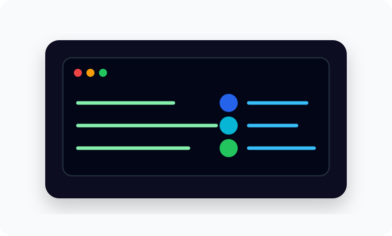
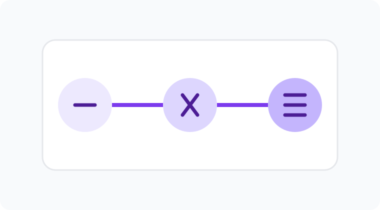
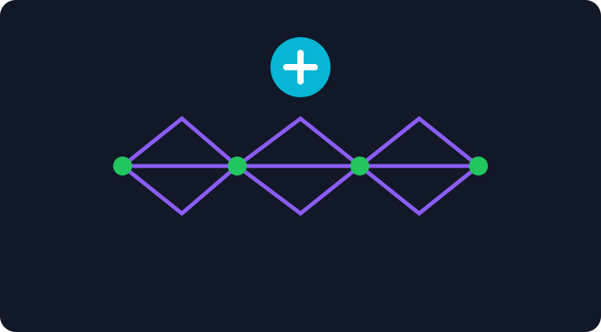
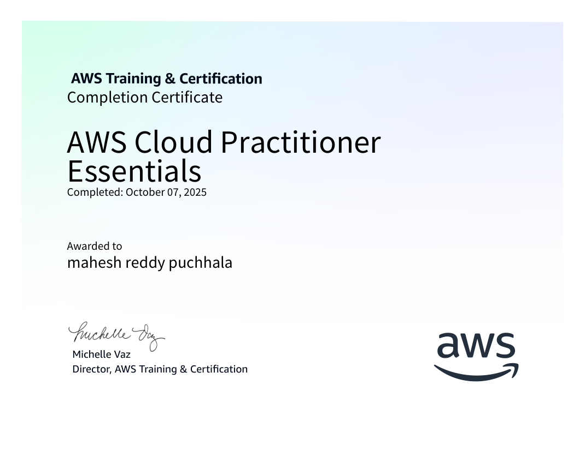
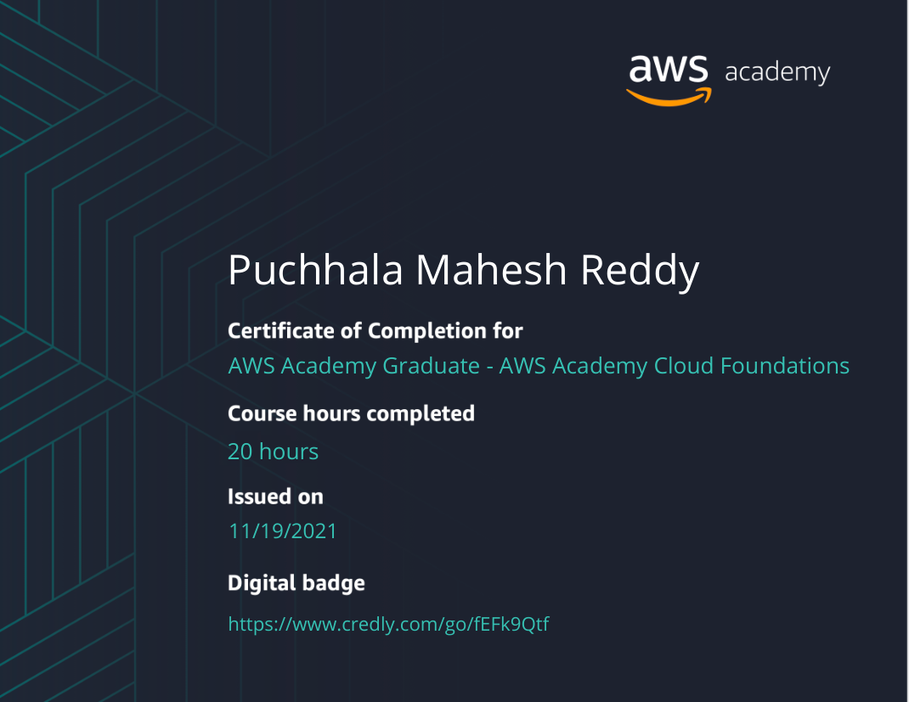
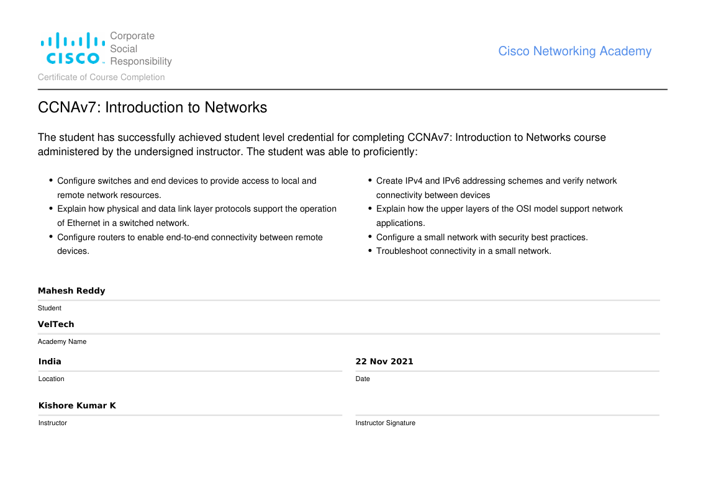
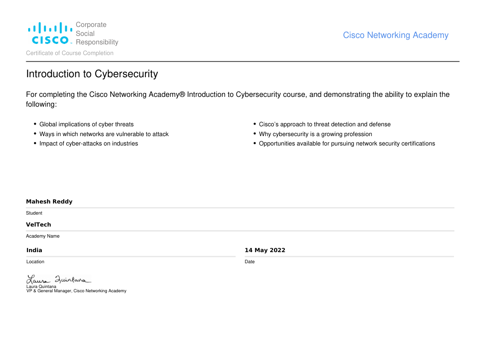
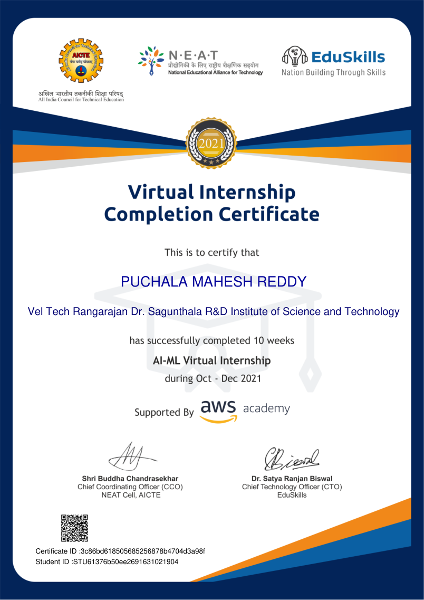

AWS Cloud
EC2, S3, IAM, CloudWatch, VPC basics, AWS CLI and cloud security concepts.
EC2S3IAMCloudWatchVPC
Cloud Support • AWS • Linux • Python Automation
Aspiring Cloud Engineer focused on practical cloud operations.
I am preparing for entry-level Cloud Engineer, Cloud Support Engineer, Cloud Operations and Junior DevOps roles. My learning is focused on AWS services, Linux troubleshooting, monitoring, networking fundamentals, Git and Python automation for real operational tasks.
I am an MSc Computer Science graduate with Industrial Placement from the University of East London, focused on cloud engineering, cloud support and infrastructure operations.
My preparation is built around job-related technologies: AWS EC2, S3, IAM, CloudWatch, VPC basics, AWS CLI, Linux administration, SSH, file permissions, services, logs, system diagnostics, networking fundamentals, Git and Python automation.
I have practised troubleshooting workflows such as checking server access, validating security group rules, inspecting services, reviewing logs, checking CPU/memory/disk usage, identifying issues and documenting fixes.
Instead of only listing technologies, I show the workflow I am training for: access the server, check the system, inspect logs, troubleshoot services, automate reports and store evidence safely in cloud storage.

EC2, S3, IAM, CloudWatch, VPC basics, AWS CLI and cloud security concepts.
SSH, files, permissions, users, services, logs, processes, disk usage and memory checks.
File handling, report generation, subprocess, automation scripting and boto3 concepts.
TCP/IP, DNS, HTTP/HTTPS, routing, subnetting, issue tracking and documentation.
Sep 2025 - Feb 2026
Remote Training
Oct 2021 - Dec 2021
AWS, Linux, Python
A practical cloud operations project planned to prove hands-on cloud support capability. The project will collect Linux system health metrics such as disk usage, memory utilisation, running processes and service status, then generate a structured report using Python.
The final version will upload reports to AWS S3, use EC2 as the working environment, apply IAM access concepts and document the troubleshooting workflow with screenshots and GitHub proof.
Status: main cloud project to be completed and added with full proof.

Python, NLP, Machine Learning
Developed a machine learning system to identify potential depression indicators from text data using NLP and classification techniques. The project involved data cleaning, text preprocessing, feature extraction, model training and evaluation.
This project strengthened Python programming, data preparation, analytical thinking and model evaluation skills.
SQL, Web Application, Google Maps API
Built a web-based application concept connecting students with suitable private tutors based on location, subject preference and availability. The system used SQL-driven search and filtering logic to improve tutor matching.
Google Maps API was included to support location-based search and improve user navigation.
Android, Firebase, Google Maps API
Developed an Android application concept for real-time location tracking and map visualisation using mobile location services. The application used Firebase and Google Maps API to store, manage and display location data.

Artificial Intelligence, Blockchain, Fraud Detection
Designed an academic project concept focused on reducing fraudulent activity in e-commerce transactions by combining AI-based detection logic with blockchain-inspired data integrity ideas.
The project strengthened understanding of secure transaction workflows, fraud prevention concepts, data validation and technology-driven risk reduction.
Python, MySQL, Seat Allocation Logic
Developed a system concept to automate bus seat booking and allocation. The system focused on managing seat availability, passenger information, booking confirmation and basic data storage.
This project improved understanding of database-backed applications, input validation, booking workflows and structured system design.

Completed AWS Training & Certification Cloud Practitioner Essentials, covering cloud concepts, AWS services, security, pricing and support.
View Certificate
Completed 20 hours of AWS Academy Cloud Foundations training covering cloud architecture, AWS services, security and monitoring.
View Certificate
Covered switching, routing, IPv4/IPv6 addressing, network connectivity, small network security and troubleshooting.
View Certificate
Covered cyber threats, network vulnerabilities, cyber-attack impact, threat detection and security career pathways.
View Certificate
Completed 10 weeks of AI-ML virtual internship, practising Python, data preprocessing, model training and Jupyter Notebook.
View CertificateCompleted focused preparation in AWS, Linux, Python automation and Git for entry-level Cloud Engineer and Cloud Support roles.
Practised troubleshooting workflows including SSH access, service checks, log review, disk/memory monitoring and technical documentation.
Currently preparing the Cloud Automation Project to add GitHub proof, screenshots and real AWS/Linux/Python evidence.
Thank you for visiting my portfolio. I am sincerely looking for entry-level opportunities in Cloud Engineer, Cloud Support, Cloud Operations, Junior DevOps or Technical Support. I would be grateful for the opportunity to discuss any suitable role where I can contribute, learn and grow with your team.
See My CV